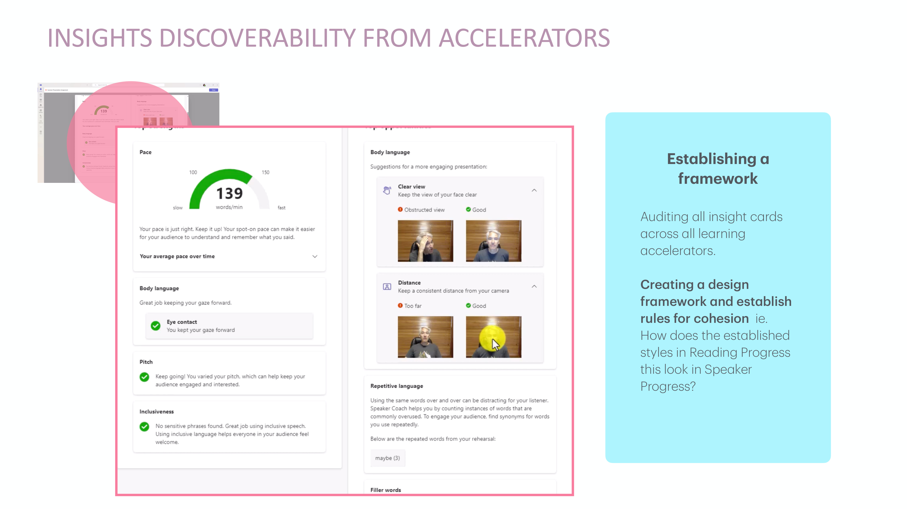
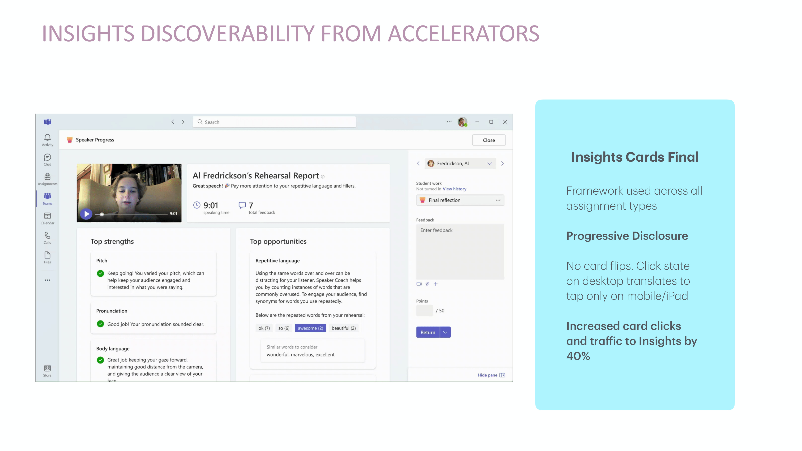

Case Study · Microsoft Education
Designing once, scaling across the whole suite
Two stories about work that had to hold up beyond a single screen: Speaker Progress, plugged seamlessly into the Assignment and Grades experiences educators already used in Microsoft Teams; and EDU Insights, a progressive-disclosure framework that shipped across every Learning Accelerator and lifted discoverability 40%.
Part of Microsoft Education's suite of Learning Accelerators, Speaker Progress helps students overcome their fear of public speaking and become more confident, captivating, and competent speakers. My role was the educator side of that equation: personalizing the student report so a teacher could see meaningful progress at a glance, and plugging the new feature seamlessly into the Assignment and Grades experiences educators already used in Microsoft Teams — rather than asking them to learn a separate tool.


EDU Insights · The Systems Challenge
One Pattern, Four Products, One Design System
At a company as large as Microsoft, shipping one good feature isn't the hard part — making it scale across a whole product family is.
The prompt I was given put that challenge plainly:
"Create a progressive disclosure system that guides an educator from a single data card in a learning product to the full history in the Insights app."
The Insights team was a highly motivated partner going in — they wanted more traffic to their app, which meant discoverability from every Learning Accelerator was already in their interest.
Before any UI work, we had to establish two things: where Insights-relevant data was already surfacing across Assignments, and who the real audience was — students, teachers, or both. The Insights team confirmed they had almost no standalone users, only schools, so the container decision followed directly: design for the classroom experience (Reading Progress, Speaker Progress) rather than a standalone product like Reading Coach.
Interviewing teachers surfaced a clear pattern: they cared about outlier data — a student who usually scores 90% but suddenly drops 20 points below their own average — far more than the raw grade itself. The number wasn't the point; the context around the number was.
Early interaction ideas ranged from reusing the existing info-icon pattern next to data labels to flipping the entire card. We also explored trend arrows and color coding, but ran into a real constraint: Microsoft can't universally define what counts as a "good" or "bad" trend for every metric, so a naive green-up, red-down treatment was off the table.

Any single interaction decision only mattered if it held up everywhere else. I audited every insight card across every Learning Accelerator and turned that audit into a design framework — a set of cohesion rules so a pattern established in Reading Progress would look and behave the same way in Speaker Progress.
The framework's core idea: don't jump straight from a single data point to the full historical Insights app. Teachers are usually mid-grading when they land on a review screen, and a hard cut to a different app is disorienting. So the pattern steps through three levels instead — a card with a single number, a modal with one graph, then the full Insights experience — keeping teachers in their flow rather than yanking them out of it.
I'd gotten attached to a card-hover interaction, prototyped with real Fluent components. It worked well — until I remembered that students and teachers do most of this on iPads, where hover states don't exist. I reworked the interaction around click and tap instead, so desktop and iPad behaved the same way.
The Result
Shipped Across Every Assignment Type

No card flips. A click state on desktop that becomes a tap on mobile and iPad.